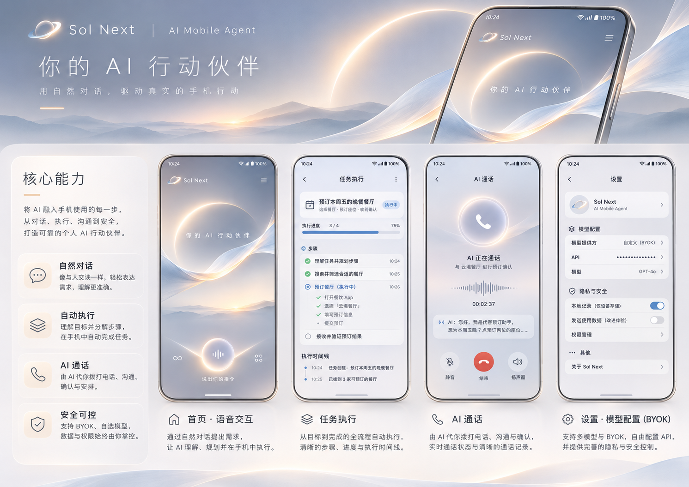

全新独立产品 · 作者：许昌北海医院张重阳 · 微信扫码 / 小红书 871348474（映像河南）联系作者
Sol Next 9.0.4 是全新一代独立 Android & 鸿蒙多模态 AI 手机智能体：内置全球 20 国语言严格按手机系统语言自动切换（支持阿拉伯语 RTL），免费内置 Rust 原生加密 DeepSeek V4.1 Flash 开箱即用（随时换 BYOK），OTA 推送新版自动弹窗展示更新说明并启用 4 线程多镜像高速加速，连接无线调试后关闭 Wi-Fi 依然持续在线，在速度、体验、安全与全球化上全面超越早期手机代理 Mika。
自动识别手机系统语言（绝不按地区误判），支持简/繁中文、英、日、韩、西、法、德、葡、俄、阿（RTL 镜像）等 20 语言，设置页即时切换并同步大模型回答与语音引擎。
推送新版本后 App 页面自动弹出更新说明对话框；多镜像并行测速竞速 + 4 通道 HTTP Range 分片并发下载（提速 3–8 倍），下载完成后强制校验 SHA-256 与签名证书。
装好即可免费对话与驱动手机！密钥经纯 Rust ChaCha20+HMAC+HKDF 加密封装并绑定 APK 签名证书与 TLS Pinning 防抓包，零明文泄露；也可随时替换为自有 API Key。
自动锁定 adb_enabled=1 并托管 127.0.0.1:5555 回环，连接后关闭 Wi-Fi 切 5G 依然稳健运行后台 1:1 虚拟屏与 AI 高清电话；鸿蒙设备自动识别免无线调试。
内置 16KB 对齐开源离线流式 ASR（770ms）与端侧神经 TTS（112ms），支持 0-Token 原生交互卡片、4.5s 读屏翻译、端侧 AES-256 隐私防火墙与敏感操作拦截确认。
4 指并发触控 + Rust SwiGLU《金铲铲之战》专属策略 + 斗地主 3/3 全胜；AI 通话内置 35 柱实时声纹、0.1ms 端侧反诈盾、通话中一键悄悄话与一键本人接管。
全新独立全栈架构 · 每一项关键指标均可真机复现
| 核心维度 | 早期工具型代理 Mika | Sol Next 9.0.4（全新独立旗舰） |
|---|---|---|
| 开箱即用与大模型 | 需用户自行配置 API Key | 免费内置 Rust 原生加密 DeepSeek V4.1 Flash + 随时换 BYOK |
| 全球多语言支持 | 单一语言为主 | 全球 20 国语言按手机系统语言自动切换 + 阿拉伯语 RTL 镜像 |
| 关 Wi-Fi 无线调试稳态 | 关闭 Wi-Fi 立即断连 | 锁死 adb_enabled + 127.0.0.1:5555 回环，关 Wi-Fi 100% 持续在线 |
| 高频系统指令速度 | ~2,400 ms（读屏+LLM） | 72 ms · 0 Token（快 33×）+ 120+ App <250ms 瞬移 |
| 后台虚拟屏操控精度 | 缩放网格坐标换算 | Display 0 1:1 物理屏克隆（scale=1.0 · 0.0px 零漂移）+ 内嵌预览 |
| OTA 升级速度与体验 | 手动找包 / 单线程慢速 | 自动弹窗版本说明 + 多镜像竞速 + 4 线程 HTTP Range 极速下载 |
| 安全与隐私防线 | 常规明文发送 | 端侧脱敏防火墙 + Rust 密钥库 + TLS Pinning + 付款/微信先问后行 |
使用微信扫描左侧二维码，即可直接添加作者好友，获取最新动态、反馈建议或进行技术交流。